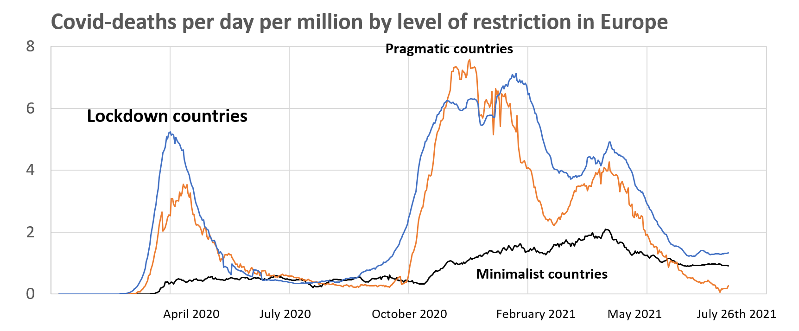

Let us divide the countries in Europe that have at least 1 million inhabitants into three groups: the ones that had high movement restrictions in 2020, the ones with almost no restrictions, and the ones in between. The graph below gives you the punchline that countries with more restrictions had higher numbers of covid-deaths, but in order to discuss the many other implications, I need to explain how the graph was put together.

I take the data on restrictions from the Oxford Blavatnik Stringency Index that gives a daily severity level for all countries in the world since January 1st 2020. This stringency index combines information on nine government policies: school closures, workplace closures, cancellation of public events, restrictions on gatherings, closure of public transport, restrictions on internal travel, restrictions on foreign travel, and the presence of a covid-cautioning public information campaign. The lowest value is 0 and the highest 100. One can think of a lockdown as having a score above 70. By that metric, the UK spent 4 months of 2020 in lockdowns and Australia about 3 months. From January 1st 2020 to now, the average world citizen spent about eight months in lockdown.
I take the claimed numbers of covid deaths by countries from the Oxford Blavatnik website as well, which essentially reports the daily data as claimed by countries themselves (so sometimes when a country revises downwards you see negative numbers for that day). I define the high-restriction European countries as those with at least 60 days of lockdowns in 2020. That includes 92% of the population and most of the large countries. I define minimal restriction countries as those with average restrictions in 2020 below 40, which turns out to hold only for Belarus and Estonia. The pragmatic countries in between are all the Scandinavian countries (Denmark, Sweden, Norway, Finland), Switzerland, Bulgaria, Serbia, and Latvia. Interestingly, the Scandinavian countries all had very similar average restrictions. Denmark, for instance, had an average restriction level of 51 whilst Sweden scored 54. Only Sweden had no lockdowns at all in Scandinavia, whilst Finland had 18 days of lockdowns and Norway 34 days in 2020, for which the Norwegian health authorities later apologised.
The total deaths per million till July 26th was 1449 for the lockdown countries, 1123 for the pragmatists, and 433 for the minimalists.
The graph and the data shows and suggests many things:
- Lockdowns in Europe 'do not work' to prevent covid deaths. Rather, the data shows that the more restrictions in 2020, the more covid deaths in both 2020 and in 2021. So the data strongly suggests lockdowns lead to more recorded covid-deaths. At the very minimum the data shows that countries without lockdowns do not experience the covid-Armageddon that is even today prophesised by doom-medics in lockdown countries. That alone makes liars out of an entire layer of government advisers, model builders, and politicians throughout much of Europe who daily fan the flames of covid-hysteria.
- The lockdown countries have less flat curves in spring 2020 (March-June) than those of the pragmatists and minimalists.
- Covid-deaths are highly seasonal, with the numbers going down in summer times. This was not clear in 2020 when many suspected (including myself) that covid was 'done' in much of Europe. Now we know that new variants and differing circumstances lead to another winter peak.
- The covid-death numbers in the lockdown countries in the summer of 2021 look very suspect: we are now talking about vaccinated populations in a season where in 2020 there were very few recorded covid deaths, and where in the pragmatist countries there are again almost no covid deaths in the summer of 2021. One has to strongly suspect that the lockdown countries are counting people as covid deaths that in truth died of other causes, but who tested positive at some point in time. [You btw also see in the excess death graphs a total lack of any summer excess]. The suspicion has to be that we are now looking in the lockdown countries at artificial claims, either because of false positives in tests or due to counting of minimal covid-levels as the cause of death.
- The rest of Scandinavia does not 'disprove' Sweden: restriction levels are similar across Scandinavia and none of them are lockdown countries.
- In most regions of Europe, there is some country close by to which those who enjoy their personal freedoms can move to if they want to. Central-Europe can go to Serbia or Bulgaria. North-East can choose between Latvia and Estonia. North-West can go to Denmark or further up still. Southern Europe can head for the Swiss alps to taste freedom (what does that remind me of?).
Excess deaths is clearly the way to go, so I do not see why you even bother using covid-deaths per day per million.
Of course, even excess deaths is just one of many many outcomes but I do not have to tell you this.
There is quite some evidence out there that by the metrics you use there is some (marginal) effect of lockdowns on the (excess) deaths out there; I have summarized some key studies here: https://a-ortmann.medium.com/lockdowns-they-work-but-cost-dearly-89c3011c8954
Of course none of these studies do what needs to be done which is looking at all of the downstream costs of lockdowns.
God, this looks like some really "motivated" reasoning.
Are you seriously comparing one data set that covers 92% of europe with another which looks at 2 of the poorer countries in europe?
Any chance the data in the minimalist set is not high quality?
I mean, lets just compare Sweden with Estonia right?
https://www.mylifeelsewhere.com/compare/estonia/sweden
5 years greater life expectancy, 55% less likely to die in childbirth, etc etc.
And with just 1.35m population in Estonia, surely that data set is suspect - even apart from when you consider the ability of a poor nation on the outskirts of Europe to properly measure COVID deaths.
Thanks Paul. You may find a similar story looking at the American States where there are significant differences in policy. I signed the Great Barrington Declaration after hearing about it from you and I remain opposed to lockdowns and masks because I think the police state is a greater danger than the Covid virus. In Australia government officials are setting new standards of hysteria, even warning masked shoppers not to talk to their friends face to face and to assume that the person next to them in the check-out queue is contagious. The nightmare down under is just starting.
yes, Australia might even surpass the UK in terms of self-damage. Its extraordinary, a complete loss of perspective. And one has to fear what comes afterwards when large groups discover just how much poorer and irrelevant they have become.
excess deaths tells a very similar story, but has its own measurement and interpretation problems. Besides, it is always important to see whether a policy made sense in terms on its own terms. As you know, I certainly am considering the many costs of all these policies, but not in the piece above.
The damage of lockdowns is of course immense. I fear several Australian states will be locked into another bout of self-damage in the coming months.
Australian State Premiers and officials do not appear to have thought this through. They had as much chance as King Canute of holding back the tide and interstate rivalry makes them even sillier. The Prime Minister appears to have more moderation and good sense than the lot of them but we are rushing headlong into fascism.
And the direction of causation is? It's equally plausible countries with high death tolls brought in more onerous measures; without some sort of control, it's hard to be sure those countries didn't avoid higher excess mortality
Thanks for the post Paul
I've given up arguing with you on these things — which is not some accusation. I'm sure there's plenty of interest for those for whom econometrics precedes more informal methods. For me, as you know, it's the other way round. I think it's easy for econometrics to be nonsense without some good "ground-truthing" of the hypotheses one is implicitly trying to test.
We each have our different styles of reasoning.
Be that as it may, in case it's of interest to you, there are others among us who may think similarly to me. They're certainly persuadable that they're wrong. Or I think so. I haven't noticed that they're in the grip of panic, but who knows, I'm no psychologist compared with you (I'm basing this on your own insights into my motivations. You probably have similar insights into the motivations of others who are unpersuaded).
In that regard, a friend and lurker on Troppo for whom I (and plenty of others) have a lot of respect e-mailed me about this post saying this:
The counterfactual is a country where no action is taken. Deaths probably lead to lockdowns.
I replied:
I tried to pin Paul down in this thread, and made a little progress, but surprisingly little.
You’re welcome to read that thread and then try to pin him down in the current thread.
They wrote back:
I too have given up on you a long time ago on this issue and your reply only confirms it, I am afraid.
Take for instance the off-hand comment of your anonymous contributor that you subscribe to (also made by Pyrmonter above) that "Deaths lead to lockdowns".
Note how this crucially introduces the idea that in some countries there are much lower numbers of cases and deaths UNRELATED TO LOCKDOWNS ITSELF. That in turn means it is quite possible that low deaths in Australia or China have nothing to do with lockdowns, a possibility you have steadfastly ignored even though it comes directly from the assertion that "deaths lead to lockdowns": if deaths are not inevitable but differ over places so that some then lockdown and some do not, one has bought into the idea that they differ for a non-lockdown reason. So the logical implication of your own stance on lockdowns in Europe should open up your mind to the idea that low death numbers in Australia (or anywhere else) can be related to something else than its lockdowns. So you should no longer take that as a 100% sure given, which I have urged you to do many times. But you have out of hand dismissed that, totally convinced as you have been, demanding I prove otherwise to your satisfaction. And here you are, insisting on the crucial idea behind that doubt yourself, seemingly blissfully ignorant of the equivalence.
Btw, on reverse causality, I have also made the same observation myself here on Troppo (https://clubtroppo.lateraleconomics.com.au/2020/12/22/which-governments-have-been-most-restrictive).
There are a lot of other things to say here, but note that the post makes it clear what the data says at the minimum (namely that lack of lockdowns does not cause covid-Armageddon, which is a huge thing to note in the context of the claims by many public advisers). Also, you should remember that in the models used to argue for lockdowns (both before and in many used thereafter), it was continuously argued that lack of lockdowns would lead to a huge surge. Those surges were thus predicted for Sweden, Florida, and lots of other places. They didnt happen, but the pro-lockdowners simply pretended this meant nothing. As you do here.
The post thus gives you 10 countries which has no or short lockdowns and less covid-deaths than the lockdown countries in Europe. The only way one can then maintain that lockdowns do 'work' is to appeal to some other factor that differs by country that causes a lot in one place but not another. That realisation alone then should open up your mind to many possibilities.
Etc. I find your inability to put two and two together fascinating. Intellectually dishonest doesn't begin to cover it. As I noted in June 2020, the play Rhinoceros very much comes to mind when I see you galloping on twitter to advocate masks, lockdowns, etc. I presume you read that comment then and ignored it at the time. Still galloping behind policies that are doing huge damage to many parts of the population. Sigh.
Politicians and public servants have not lost a cent due to this pandemic ,unlike private citizens whose lives and businesses have been ruined by restrictions .? How do they expect to bebe believed and have their opinions respected if they have nothing to lose ? I believe UK civil servants had the cheek to increase salaries and bonuses during the lock downs , while they worked from home !
btw, I am on holidays the next two weeks, which also means a digital detox, so expect no replies the next few weeks.
Thanks Paul,
I agree with you on the failure of 'let it rip' to generate armageddon. It's seems to be a good point — though as you know I'm participating in this argument as an outrider rather than as someone who's going through all the sources or even trying to do that.
I love the way you've invented a position for me which is that I'm defending lockdowns. You're certainly sticking to it, so there's not much point in my saying again that that's not my position. My position is that your argument that the Melbourne lockdowns might not have helped contribute to eradicating the virus requires magic possums to work.
It's a pity you fall for the impatience and emotionalism of accusing people who disagree with you of dishonesty. (Sorry — "Intellectually dishonest doesn’t begin to cover it".) I guess that's rigour in argument for you ;)
you're the one who ups the ante (and not for the first time) by using big words like dishonesty. Of course that riles me up.
You might want to revisit what you have said now and then on Troppo about Sweden. It certainly sounded like you were deriding them for not doing lockdowns.
Do state your positions on lockdowns though, particularly the ones in Victoria and the rest of Australia.
Well said, Proletarian. Paul and Nicholas continue to argue a fine point that is even finer in light of the latest news from the Covid front, namely the appearance of antibody dependent enhancement. This should come as no surprise because it was the fate of previous attempts to formulate vaccines for corona viruses.
The vaccines will have to be withdrawn. This will be ghastly news for people who have been vaccinated and I would not like to be Joe Biden's speech writer making the announcement.
Covid 19 is a tragedy and a crime against humanity that would not have happened if politicians and public health officials had kept their noses out of it and allowed doctors to do their jobs.
A precise, concise description of how the dark deed was done can be seen in the interview with Dr Vladimir Zelenko from upstate New York on Session 62 of corona-ausschuss.de and the broader perspective comes from holocaust survivor Vera Sharav in the preceding interview. Her instincts as a six-year-old child saved her from the Nazi killing machine and she hates to see it happening again.
It's difficult to understand your position if you live in Australia, Paul. In both Melbourne and now in Sydney there was an initial phase of low infections followed by increasing levels of infection and deaths. As this occurred restrictions were progressively tightened until they reached the stage of lockdowns. In both cases the main criticism of policy was that the strong response was left too late. I follow the experience in Malaysia and Thailand and exactly the same policy evolution there. So in these countries, anyway, the reverse causation argument seems accurate. My understanding that this was the pattern in most European countries but definitely the UK. More intense restrictions followed worsening Covid experience and not the reverse.
Despite your attempted rebuttal I don't follow your argument or your defence of it.
Can you cite the cases of ADE? Data, country, vaccines?
From what I’ve seen, sickness and mortality rates appear to be substantially reduced by the vaccines in Australia at least.
This is hot off the presses, from Massachusetts, as I understand it. Robert Malone is commenting on antibody dependent enhancement in the waning phase of the Pfizer vaccination. I don't pretend to understand the technicalities but Malone explains the issue in comparatively simple language in interviews over the last 48 hours. The vaccines currently used in the West were developed from his gene therapy research at the Salk laboratories in 1988. Even as a layman, I was aware that ADE knocked out earlier attempts to produce vaccines for corona viruses and I was wondering why this lot should be any different.
If the vaccines cause ADE, which increases the effect of the virus in the infected individual, why have they reduced sickness, death and transmission in every study and everywhere they’ve been used - at least that I’m aware of.
And wouldn’t the effect of the vaccines, ie to reduce sickness and death, be the very first thing any scientist working in this area would look for? I mean, if the regulator saw increases in disease and death from a vaccine I can’t really see them approving it. Can you?
Seems a bit of a stretch.
But if Robert Malone has some actual data, and has some actual evidence to this effect, I think we’ll all know about it pretty quickly.
Malone picked it up from the mainstream media sourced to a government official, which is the start of a major play in the politics of this thing. I'm watching an interview with toxicologist Janci Chunn Lindsay on the theory. It is biology 1.0 that if you conduct mass vaccination with leaky vaccines during a pandemic you accelerate the production of variants. We were warned.
We will now see major pharmaceutical companies bringing to market medications to treat the virus that try to mimic existing treatments used off-label with great success by doctors including Pierre Cory, Peter McCullough, Vladimir Zelenko and Thomas Borody in Australia.
We have had 18 months of cover-ups, lies and fear-mongering propaganda. I would like to think you are right and this time it will break through into the mainstream. There is a lot of legal work going ahead in America and Europe and the Indian legal profession stood up against the WHO.
+1 NG - "It’s a pity you fall for the impatience and emotionalism of accusing people who disagree with you of dishonesty. (Sorry — “Intellectually dishonest doesn’t begin to cover it”.) I guess that’s rigour in argument for you ;)"
paul frijters says:
July 31, 2021 at 2:08 am
"you’re the one who ups the ante (and not for the first time) by using big words like dishonesty. Of course that riles me up."
+ stilted laugjter. Paul, you are not self aware. I am not saying this as an ad hom, as I truely belive it. Submit all your corona posts to LSE Psych dept for evaluation. We will rally around you in recovery.
One day I will be able to write like Harry Clarke.
Paul,
Where did I accuse you of dishonesty?
My position on lockdowns is pretty simple and based on a healthy respect for my own ignorance — and others.
I've stated it on lots of occasions.
1. I think they're worthwhile but I don't know.
2. They're extremely expensive.
3. So don't do them if you don't do them properly.
4. It's incontrovertible that on numerous occasions they've 'worked'. Where they have, the ones I know of have been accompanied by stringent social distancing requirements. Not just lockdowns.
5. Lockdowns working involves eradicating the virus. For those who are confused, this is not a claim that, having eradicated the virus it can't be or won't be reintroduced. It's silly to think that it is.
6. Stopping short of having local eradication in hand makes sure that the lockdown won't work. This is trivially obvious. So econometric studies asking 'do lockdowns work?' should exclude such circumstances from the analysis. I.e. the question should be 'do lockdowns work if you try?', just as studies of whether parachutes work or not should be studies of the question 'do parachutes properly made and properly used work?'. If a bunch of people were tossed out of a plane with parachutes but no rip-cord, omit them from your sample.
7. The increased infectiousness of Delta variant reweights all the questions of the costs and benefits of lockdowns again, all the way to making one wonder whether, if it's well established as in Sydney, they can be made to work at acceptable cost.
8. If true this means one reaches a 'go-no-go' point early on. Melbourne seems to have acted in time. Was that cost effective all things considered? Too early to tell.
9. As the virus spreads, one is likely to be politically forced to lockdown. This is important to consider in the calculus of knowing what to do.
10. Normal political leadership may suffice to continue the experiment so long as one isn't forced to open up field hospitals. I doubt you can hold out longer than that. For this and lots of other reasons, maximising vaccine rollout is critical.
11. Keep the company of those who seek the truth and run from those who have found it. (Vaclav Havel).
Mr. Gruen
So your position make it clear:
When people stop normal live in-definitively, lockdown could work. On an Island (Australia, Island, New Zeeland, Taiwan) there is more chance for this option. But the self-isolation will have to last indefinitively, the population will remain at risk from the virus in-definitively.
And also to concider: situations with isolated fully vaccinated (on a ship, plane) din't protect them from an outbreak: https://www.bitchute.com/video/64CAk8DKvagD/
Lockdowns and other restrictions and also the vaccines are no way out of the problem but are creating new harming problems! It's an totally unscientific approach relying hugely on belief, that's doing much harm.
Sweden, Florida, Texas, India and others shows, that is much better people learn to deal with the virus and establish well proven treatments against Covid-19 (https://covid19criticalcare.com/ )
China fixes much of the problem with help of the Traditional Medicine Plants https://pubmed.ncbi.nlm.nih.gov/32843234/ (Artemisia is one of the often used plants, as in Africa, especially Madagascar).
It is scary, that in western Government and Health Institutions there is no interest in how other country which performs well, are managing the situation. With Ivermectin, Vitamin D, Phytopharmaceuticals and others, the situation can be under control in a few month - without any damaging measures!
"I mean, if the regulator saw increases in disease and death from a vaccine I can’t really see them approving it. Can you?"
The regulators should never have permit the vaccine to be authorized. This was a criminal act in the view of the Nurnberger Convention. See: https://doctors4covidethics.org/letters/doctorsforcovidethics-letters/
More death after vaccination in most of country:
https://mobile.twitter.com/RealJoelSmalley/status/1396238570432651272
Israel:
https://ourworldindata.org/grapher/excess-mortality-p-scores-by-age?time=2020-12-20..2021-03-14&country=~ISR
About ADE:
"•SARS-CoV-2 mRNA vaccination induces a high rate of non-neutralizing antibodies" https://www.cell.com/cell/fulltext/S0092-8674(21)00706-6
But you are right: there are little scientific evidence, that this problem already become a real thread to vaccinated. But this could be one of the cause of the rising of death in some country after the start of mass-vaccination.
See also:
https://drive.google.com/file/d/1lXseLnTJ9MsfeDcvohp96NiQ9SSzAzsv/view
"More intense restrictions followed worsening Covid experience and not the reverse." In Sweden there was never such an answer. The first wave was important with a lot of death, but not more than in other country. Now, after 17 Month of "pandemic situation" Sweden is not in front about death toll. Lockdowns and masks are definitively not the appropriate answer. Ivermectin, Vitamin D and other are, this have scientifically much better evidence.
The link to Israel excess mortality didn't show correctly, new try:
https://ourworldindata.org/grapher/excess-mortality-p-scores-by-age?time=2020-12-20..2021-03-14&country=~ISR
https://ourworldindata.org/grapher/excess-mortality-p-scores-by-age?time=2020-12-20..2021-03-14&country=~ISR
I give up with the Link to excess mortality in Israel after begin mass vaccination.
The page is:
https://ourworldindata.org/excess-mortality-covid
There chose Israel from December 20 on.
"More intense restrictions followed worsening Covid experience and not the reverse."
This theory is weak when comparing South- and North-Dakota:
https://i1.wp.com/sciencefiles.org/wp-content/uploads/2021/04/South-North-Dakota.jpg?ssl=1
Not really precise (no differentiation between vaccine-breakthrough versus death or critically ill), but some hints about ADE: https://rumble.com/vkjqjm-vaccine-failure-patients-hospitalized-dying-mostly-fully-vaccinated.html
Thanks David. The New York Times has made it official, running a story where the Centre for Disease Control acknowledges that vaccinated people can transmit the disease just as readily as those who are not vaccinated. When all previous efforts to produce vaccines for corona viruses have failed it does seem a strange strategy to lock up populations in the hope of finding a magic cure.
Lockdowns are a form of martial law imposed by a tiny leadership core who are not world-class intellectuals, often just a State Premier and Police Commissioner or Health Commissioner, not even a kitchen cabinet.
Australian authorities are paying no attention to breaking news and are doubling down on efforts to inject this stuff into our bodies. The army is patrolling the streets of Sydney, one of the world's great cities, to ensure people consigned to quarantine stay home and police are stationed at key locations to head off protest gatherings before they start.
Thanks David,
You'd need to go back through my various interactions with Paul to understand my position. I'm not posing as someone who's trying to stay on top of it all as if I'm a health official advising people on what to do. I've been spending most of my time testing what others have been saying and making conditional statements.
Quite a lot of where this has gone recently has been to the question of 'whether lockdowns work' — simply in the sense of reducing COVID infections. My view has been that we have numerous examples of them working. Pauls has been that we have numerous cases of them not working. I regard relying on lockdowns that have not worked for obvious reasons (that they've been discontinued with COVID in the community so it comes back) as about as ridiculous as saying that ovens might not work to bake cakes because we have numerous examples of them being used to burn the ingredients to a cinder.
More panic.
You are claiming that , delaying... works ....
I've removed this comment as uncivil.
It would be good if the author could restate it in civil terms as it contains some worthwhile claims and reporting which would be good to see here.
But they're not going up in the form they're in.
NG
The situation in Australia is fragmented, confused, contradictory and without strategy. Part of the causes for this is the complete unpredictability of the evolutionary trajectory of this virus.
Then the overlay of nasty agenda politics is added. "Short, sharp lockdowns" is the constant nagware of the left (such as ng here). Yet there is no reliable method of predicting the duration beforehand - so each broken straw loads the camel further. In other words, trust has been cluster bombed.
Then "Let her rip" is the sardonic reply, designed to load further distress on the camel. No strategy ... imprediction of the virus' evolutionary lurches precludes it. Vaccines provide some shelter, so the cry is "Get vaccined" - then the imperfection in this is pointed out, and the camel trembles with distress load.
What really worries me now, genuinely, is noted in a comment from pf above. The "elites" (medicos, politicians, bureaucrats, media commenters, journalists) have lost the plot - now they're terrified. The camel is right on the verge of biting everything in sight. There is no credible exit strategy. The fear is palpable.
I am far away in the north-west corner of the continent but I think you are correct, Ian. Australians isolated themselves from the world and even from one another by internal border closures. Now we are like the child who was never exposed to germs because his mother kept such a pristine home. Then he went to his first school camp. We are vulnerable.
Jerry, "We are vulnerable".
Only to the extent we are unvaccinated. You can either build up resistance to Covid by contracting it or by getting vaccinated. The latter is by far the better course of action and worth waiting for. But it's not just the length of the wait that matters - its also the increasing levels of infected/vaccinated that are required to achieve herd immunity. With Delta it is probably 90%. With Lambda it might be higher than that. With still newer variants it might be higher still.
I don't believe that the number of Australians who are deluded anti-vaxers and virus-deniers is negligible. It's large enough to decide a federal election. Hence compulsory vaccination is not going to happen given our unprincipled politicians.
The vaccines are dangerous, Harry, and they are not working. Pfizer is admitting as much. Expect a marketing campaign from Pfizer and other companies to sell us medications that try to mimic the properties of ivermectin but cost a lot more.
Jerry, which countries are there that the death rate did not plummet in once the vaccination rate was high?
Try Australia, Conrad. The last figures I saw in the present drama were 10 deaths from virus and six deaths from vaccine. At least they were not trying to cover them up. That was reported in The Australian newspaper after the death of a 44-year-old man in Tasmania a day or two after taking the vaccine.
There is so much information out there on the dangers of the vaccines that if you have not found it, you don't want to find it. Everybody has better computer skills than I. The Parliamentary leader of the Australian Labor Party proposed paying a $300 cash incentive to people to undergo vaccination. Even in these expensive times that is enough to buy half a dozen cartons of beer. In my understanding he is in breach of the Nuremberg Rule that requires patients to give their "informed consent" before undergoing medical treatment. Bribing people is not as vicious a way of obtaining consent as strapping them down on a table, which is where we are headed, but I believe it still breaks the rule and I am advising my colleagues in the Labor Party not to associate themselves with spruiking for the vaccine "roll-out."
That wasn't the question. The question was of the countries with high vaccination rates (UK, Israel,..), which didn't see a massive drop in deaths?
My understanding is that they saw a sharp increase in deaths with the vaccination. Molecular biologist and toxicologist Janci Chunn Lindsay puts it this way: ""We have enough evidence now to see a clear correlation with increased Covid deaths and the vaccine campaigns. This is not a coincidence. It is an unfortunate, unintended effect of the vaccine. We simply must not turn a blind eye and pretend this is not occurring. We must halt all Covid vaccine administration immediately before we create a true pandemic that we cannot reign in."
Stephanie Seneff at MIT backs her up. "This massive clinical trial on the general population could have devastating and irreversible effects on a huge number of people." As a reporter I look for credibility in sources and I think anybody who did not smell a rat in the Covid story the first time Tony Fauci appeared on television should give up smoking and regain a sense of smell.
Oops. Must be Freudian error. Too much stuff about Charles and Diana on television. Should be "rein in." Amazing horses on display at the Tokyo Olympics.
Well it's true of course — the more deaths there were, the faster the vaccine rollout.
Have you noticed how dangerous parachutes are. They more or less CAUSE people to jump out of planes. How many people have you seen jump out of planes who haven't had a parachute strapped to them — either voluntarily or by crazy pro-parachute scientists?
Hi Nicholas. The first references in my diary t0 Covid-19 are in April 2020 to Paul Krugman and Luc Montagnier. Sunetra Gupta appears in May. Since then to this day I have detected a consensus among the doctors and scientists whose work I have encountered. They recommend vaccines only for people in risk groups. I think I started reading Paul's commentary and your responses about the same time I started listening to Professor Gupta.
In his precise scientist's English, Robert Malone says the vaccines have "significant inherent risks" and are unsuitable for a mass vaccination campaign. Just today I heard American pathologist Kevin Homer giving a moderate and diplomatic view.
His betterpathology.com entry is short and sweet.
When I see such eminent professionals as Malone and Peter McCullough standing up against the inquisition I am lost in admiration for their integrity and courage and I am reminded of Dietrich Bonhoeffer. I hope they do not meet the same fate.
Thanks Jerry
Did you answer Conrad's question?
You may have, in which case apologies for my flippancy. If not, could you do so please, because it seems to me to get to the heart of things — or rather, to revive the terminology I've used with Paul and with Don Aitken, it is an obvious point of ground-truthing — that is it's a way that the claims being made don't violate seemingly obvious deductions from simple facts. Of course that doesn't mean such things are off-limits, only that they need to come with clear explanation for why they don't violate commonsense.
As you'll recall, I cavilled at Paul's assertion that lockdowns don't work because if you put all the times they did and didn't work into your sample (regardless of how well or stupidly they were implemented), you get a null result.
I am not buying into these statistical arguments with you economists, Nicholas. That is like playing poker with a man called Doc. My understanding is that the vaccines are a disaster and in Australia we are making every mistake under the sun. In other words I think your argument with Paul over the past year is a side-show, as is the ongoing controversy about the origins of the virus. Was America poisoning China or vice versa? It doesn't matter. I think my first comment when Paul started your debate was that I was more worried about the police State than the latest corona virus. That was also my last comment.
I have not given up hope that sanity will prevail. Dr Fauci in his latest broadcast has finally worked out how to treat Covid 19. His neighbourhood doctor could have told him 18 months ago, just as Dr Zelenko advised President Trump. As predicted in one of my comments above, Fauci is preparing us for marketing campaigns from Pfizer and Merck for their oral medications that mimic ivermectin. When the Germans interviewed Australians on Friday on corona-ausschuss.de it was nice to hear Gigi Foster using Paul's wellby language.
Ha ha Jerry,
Perhaps you were serious and not deliberately obfuscating, but Conrad's question isn't about statistics — it's about commonsense.
"The question was of the countries with high vaccination rates (UK, Israel,..), which didn’t see a massive drop in deaths?"
The graphs I saw showed a spike in deaths coincident with vaccination campaigns and I think that included the countries mentioned by Conrad. I was reading Giliad Atzmon who has a background in mathematics and writes about Israel. The data supported the argument made above by Janci Chunn Lindsay and earlier warnings from Geert Vanden Bossche.
I am not aware that anybody is disputing the current Australian figures where the story is just starting. The official figures a couple of days ago were 11 deaths from Covid this year from under 5,000 cases (I understand a case to be a positive test) and 203 people in hospital. There were 41,406 adverse events reported since February from vaccines including 87 cases of thrombosis with thrombocytopenia and 399 deaths reported in the recently vaccinated of which six were definitely caused by the vaccine. As Rebecca Weisser notes in the current Spectator edition, the vaccines are the leading cause of coincidences.
I'm wondering where you are coming from, Nicholas, you and Conrad. Do you think such drastic measures as lockdown are OK? Do you think it is OK to inject this synthetic experimental stuff into the bodies of teenage school students and women of child-bearing age? This gets back to Paul's original questions about government decision making and to the criticism of Sanjeev Sabhlok in The Great Hysteria and the Broken State. Do you think it is OK for economists to sit back when these measures are implemented, gather statistics and argue after the event that ends justify means? Is the economics profession to be merely a mathematical apologist for fascism? If I have a quiet afternoon I will scroll back and look for Paul's original speculation.
Australia today resembles Germany circa 1932-33. We desperately need our lawyers to defend us from a herd of rampaging State Premiers who are made as meat axes and we need the judiciary in our courts to remember the reason for their existence.
Fingers are stiff. Should be mad as meat axes. Another colourful Australian expression is mad as cut snakes. They are waking up in the Pilbara now. The snakes, that is, not the politicians. Our ruling classes are frightening in their sheer banality.
Thanks Jerry
As I've said previously, there are plenty of people trying to get on top of all the data and have a position on lockdown. Since I respect a lot of them, and my discussions to try to 'groundtruth' the other side have ended in disappointment and confusion, I'm going with those I respect. But I'm not posing as an expert on it, just as I'm not posing as an expert on most things in the world.
The claims I have made strongly have been conditional ones about lockdown — if you do them do them properly. Also I support measures where there's reasonable evidence they work — which also chimes with commonsense — and which are unlikely to do much harm if that's wrong — like masks.
You haven't included a link to the data you're quoting, but if it's six deaths from the vaccines we've administered, that seems to roughly stack up with the factoid that the AZ vaccine is killing one in a million. I took the vaccine on the basis that I take those kinds of risks all the time.
Paul said". Interestingly, the Scandinavian countries all had very similar average restrictions."
The Spectator says "Sweden falls down in comparison to Denmark, which has higher population density but suffered less excess death and comparable economic damage."
https://www.spectator.co.uk/article/sweden-covid-and-lockdown-a-look-at-the-data
*
Paul then says "..."Only Sweden had no lockdowns at all in Scandinavia,"... and his pt 5. says ""The rest of Scandinavia does not ‘disprove’ Sweden: restriction levels are similar across Scandinavia and none of them are lockdown countries.".
In Paul's world the quoted text is "That alone makes liars out of an entire layer of government advisers, model builders, and politicians throughout much of Europe who daily fan the flames of covid-hysteria."
Or just you Paul. See. ..
"Coronavirus: Sweden's new COVID lockdown law takes effect
"Sweden's government, which has long shunned strict curbs, now has the power to act more forcefully to halt the spread of the coronavirus. The new law could be used any day amid a surge in cases.
"The decision comes as Sweden, which has the highest per capita COVID death rate of all Scandinavian countries, struggles to battle a second wave of the virus with emergency wards filling up to critical capacity.
"In a separate decision implemented Thursday, face masks — though not mandatory — are now being recommended for use during rush hour on public transportation.
...
"The government's hands have also been tied by Sweden's constitution, which does not give ministers the power to impose a state of emergency, allowing a nationwide lockdown.
"On Sunday, Sweden registered 489,471 coronavirus cases with 9,433 deaths, according to figures from Johns Hopkins University."
By Sou-Jie Brunnersum | 10.01.2021
https://m.dw.com/en/coronavirus-swedens-new-covid-lockdown-law-takes-effect/a-56185101
NG - yet PF may say "That alone makes liars out of an entire layer of government advisers, model builders, and politicians throughout much of Europe who daily fan the flames of covid-hysteria.".
If he was quoted in Der Speiglel or the Times, he'd be on trial.
Wow! You really are governed by statistics. I decided not to take it after biologist Bret Weinstein and others explained how the vaccines work inside the body (in terms that even I could understand). I can not see how these vaccines would not affect the natural immune system. I think it is a greater risk than the virus. Pathologist Ryan Cole at the end of a brief but informative interview was asked if he had any final words of advice. He said if you are old and you understand the risks, it is your body and your choice. If you are under 50 and want to stay alive, don't take the vaccines.
I find that a bit hard to follow, KT2, but did Paul actually that about model builders etc in your final stanza? If so he goes even higher in my estimation.
Jerry, Paul says it in pt. 1 above. By you not seeing it, questiining it, and endorsing the negative is a great confirmation bias example. Thanks.
I find it amazing, a serious set of scholars, and no reflection on basis of original data.
Same for the word 'lockdown'.
Someone please tell me;
What data is removed in qaly, daly and wellby datasets. I'd say any data not fitting for specific excess deatha as in say a pandemic.
Q: does datasets in qaly daly & wellby remove outliers?
Gt Barr Dec... 2 weeks data and two weeks either side at initial realization and action. Not really a worthy dataset, considering varients and long covid.
Q: what data is needed to have gt barr dec updated to today?
So he did, thanks KT. Paul and I are old sparring partners from his days in Australia. I was a poor student of statistics, never did understand the language. I am more worried about the censorship of this thing by my old trade, the media. I don't think the Covid project has anything to do with public health. It is about social control.
+1
Yes, I was hoping the 'endogeneity crowd' would take a longer look at the graph and see that their 'lockdowns follow deaths' doesn't hold if you take the whole of 2021: in the first wave you could still think that the more affected countries locked down, but by end 2021 there is basically no difference between the pragmatists and the cultists. So the simple endogeneity theory (lockdowns follow deaths) should have meant there were no high-death pragmatic countries at all.
There are other endogeneities one can still argue for, but I am hoping the proponents work those such scenarios themselves to see where and whether they become unstuck.
Hi Nick,
let me engage with your current position as stated in your 11 points, which I copy below for convenience.
"1. I think they’re worthwhile but I don’t know.
2. They’re extremely expensive.
3. So don’t do them if you don’t do them properly.
4. It’s incontrovertible that on numerous occasions they’ve ‘worked’. Where they have, the ones I know of have been accompanied by stringent social distancing requirements. Not just lockdowns.
5. Lockdowns working involves eradicating the virus. For those who are confused, this is not a claim that, having eradicated the virus it can’t be or won’t be reintroduced. It’s silly to think that it is.
6. Stopping short of having local eradication in hand makes sure that the lockdown won’t work. This is trivially obvious. So econometric studies asking ‘do lockdowns work?’ should exclude such circumstances from the analysis. I.e. the question should be ‘do lockdowns work if you try?’, just as studies of whether parachutes work or not should be studies of the question ‘do parachutes properly made and properly used work?’. If a bunch of people were tossed out of a plane with parachutes but no rip-cord, omit them from your sample.
7. The increased infectiousness of Delta variant reweights all the questions of the costs and benefits of lockdowns again, all the way to making one wonder whether, if it’s well established as in Sydney, they can be made to work at acceptable cost.
8. If true this means one reaches a ‘go-no-go’ point early on. Melbourne seems to have acted in time. Was that cost effective all things considered? Too early to tell.
9. As the virus spreads, one is likely to be politically forced to lockdown. This is important to consider in the calculus of knowing what to do.
10. Normal political leadership may suffice to continue the experiment so long as one isn’t forced to open up field hospitals. I doubt you can hold out longer than that. For this and lots of other reasons, maximising vaccine rollout is critical.
11. Keep the company of those who seek the truth and run from those who have found it. (Vaclav Havel)."
First off, none of these, as far as I can tell, is a position on the actual policies taken anywhere in the world. Even the first point ('worthwhile but I dont know') is neither here nor there. They are mainly statements on what you interpret the phrase 'a lockdown that works' is, what 'may suffice', what some characteristic of a lockdown is (expensive), etc. Quibbling with them is like quibbling about a stated interpretation of language: futile when having an argument about whether something actually being done was sensible or should be repeated. I do think whole countries would be incredibly offended by your implication that they didn't 'try' lockdowns if they didn't 'try' to eradicate the virus (many had that goal at some point but shifted their stated goal when they figured out it was never going to happen. Did they 'try'?), but I am not here to channel their sensitivities.
Secondly, I should restate my question: what is your position on the actual lockdown policies pursued in Australia and Victoria? Do you think they have made sense, should continue as they have been, are worth the various costs, etc.?
Thirdly, the main statement in your list I want to take up a bit further is "As the virus spreads, one is likely to be politically forced to lockdown."
Now, I agree that the political pressure depends on measured spread of the virus (which itself is the outcome of various political choices: there is no god-given mandate to do any measuring of spreads), but I wish to make three points about this statement:
1. Politicians have agency and responsibility. A politician committing crimes cannot hide behind the statement 'but I was politically forced': they are the ones taking actions. The whole notion of 'politically forced' presumes politicians in charge have no actual responsibility for their actions. There always is a choice, such as whether to resist, formulate counter-policies, organise counter-pressure, resign, etc. I dont think our legal or moral system recognises the notion of being 'politically forced', and for good reason: we have historically organised our governance and legal systems to hold people to account for the things they do irrespective of pressure from others. Particularly when it comes to actions with huge collateral damage, censorship, breach of human rights, etc., it seems very important to me to hold on to that notion of actual responsibility for actions taken. Doing so is more than just sloganism: its a strategy for better policy making.
2. You and other citizens have agency and responsibility. Indeed, that is implicit in what you are saying as you are part of the citizenry doing the 'political forcing'. Your stance, in a small way, matters when combined with that of millions of others. What I recall from your stance in the crucial political period (late March 2020, April 2020) is that you were loudly calling on twitter for the widespread use of masks. I seem to remember you even changing your twitter logo to reflect such a campaign. That has got to be chalked up as active campaigning to create political pressure to fall into line with particular policies. Do I recall wrongly? Can I not chalk you up as pro-lockdowns just on that basis alone? Can you not be held responsible for the (like) gains and losses of that stance?
3. Agency and responsibility continue, both of politicians and citizenry. So it matters whether you approve of current policies or are openly appalled and are trying to resist them. I have throughout resisted them and have so far chalked you up as approving in general because of your early campaigning and subsequent (evolving) non-stance. Your 'worthwhile but I dont know' falls into that category. So what do you regard as the actual responsibility of politicians right now? 'Should' they choose their policies on the basis of what is best for the population in a long-run sense, or should they bend with political winds, or should they be as corrupt as they can get away with, or what? What criterion do you use to judge their current actions? And what criterion do you have right now for having an actual position of what should be done? What does that criterion tell you? Or is the whole notion of using a criterion to judge action silly?
Thanks Paul
You open up lots of questions and I don't think it's productive to go into them all. As (I think) we both know, we're dealing with a case of neuro-diversity here. You and I are good friends who think in very different ways, but also seem to have pretty similar values. One of those values is that we're both pretty unprepared to defer to authority. We want to work things out for ourselves and when we feel confident of something, we assert it even if it courts disapproval.
You appeal to me to have positions on things. I don't have positions on things I don't feel confident of. I'm not sure of lots of things. A lot of my sensemaking is the sensemaking of a critic, not an authority. While I'm sure you understand that point when made in that way, most of your reading of what I'm doing wants me to be an authority or pose as one. I'm posing as a non-authority and I'd be happy if a lot of other people did too.
I check stuff out. If it and/or the people arguing it check out, I support them. On the ground-truthing I've done — and which I've not been able to get you to cooperate with — I haven't been persuaded by your arguments.
On your point about politicians having agency and responsibility, as a juridical principle you ar of course right. But life always involves the trading off of means and ends. All the time. We both agree that the decisions made by governments since COVID arrived have been of great consequence. I'm pretty consequentialist on these matters and if, as a politician you think you can't stave off lockdowns once the field hospitals open, then that's the context in which you seek the lesser of evils.
I think you're more enamoured of consequentialism than me, but if that's right, how do you square consequentialism with your point. I can think of exceptions to this rule perhaps, but politicians should, generally seek to behave so as to generate the best consequences. If you want to hold such politicians accountable for the bad that such decision making does, I don't have a strong view on that ;) I can see some sense in it. But I think they're doing the right thing.
On masks my ghast is flabbered, my gob well and truly smacked. I'll quote you back to yourself.
I think the timing is around June — but that's no matter. Right now I want to play "Spot the non-sequitur". I'd like you to identify what is most likely to be a non-sequitur in that paragraph. We don't have to agree that it absolutely IS a non-sequitur I guess, but if you can't see that I would read that paragraph as a non-sequitur, and that therefore it wasn't very well crafted to get across your meaning if you were seeking to have a conversation with me, then we probably shouldn't proceed further.
Thanks Nick.
masks are not lockdowns. But they do come from the same vein and calling for masks IS a stance.
When I get the time I will do some due diligence on pronouncements pro-lockdown, anti-Sweden, etc., from NG in that period! I recall a lot more that I will try to dig up. TBC.
On politicians, yes, they should do the best for the population. But I do not accept the inevitability of lockdowns 'once the field hospitals open'. Hospitals have overflown regularly in UK winters for decades. Whole countries resisted doing so. Nor do I accept remotely that politicians in Oz (or in most other places) 'have done their best'. Way too much corruption has taken place under cover of covid to believe they were just doing best. Way too little learning has taken place to believe they were trying to do their best.
Dont you see how strange it is for you to believe they have been doing their best?
The question of how to politically resist the pressure to lockdown and how to make resistance easier 'next time' via improved institutions is of course very important, a question I started asking myself ever since April 2020.
Thanks Paul
Let's say you're not 100% sure that you're right about masks. Let's say that their lockdownishness didn't overwhelm your critical capacities. What would be the strongest arguments for masks?
On politicians, you may be able to find quotes of me saying they're 'doing their best'. I think some are and it's a way of speaking, even about those who I think barely think about what's best. For instance I could use that expression about ScoMo, not because I think he gives a bugger, but even given that I might say he's 'doing his best' in the sense that he's getting advice from geniuses like Brendan "Masks are silly" Murphy, and in taking it, whatever motives he has, he thinks he's doing the right thing.
But the occasions I remember using expressions like that is about people like Norman Swan and Bill Bowtell and the vast majority of respectable epidemiologists who've backed lockdowns. My explanation is that they're doing their best. Yours is that they've simply succumbed to mass panic.
While we're in this 'he said she said' mode, you said I'd accused you of dishonesty and that this had induced you to escalate the agro. Perhaps I did, but it's not something I remember or am likely to approve of, so if you want me to own it, please let me know where and if I think you've understood me, I'll be happy to apologise.
thanks Nick.
my most honest 'pro-mask' argument is that they make many people feel they are doing something against a big threat whilst their negative effects are small in the scheme of things. I can make many other pro-mask arguments that I do not agree with, but the argument that they are a somewhat inexpensive placebo is the best one I can give. Mind you, that is inexpensive relative to social distancing or other measures of that magnitude.
As I said, I need to do some due diligence on this to help this kind of conversation, but it will have to be another time.
On the dishonesty thing note I said you were introducing such big words. It referred to your first entry on this thread where you introduced your anonymous writer whom you quoted to say "This seems intellectually dishonest or a serious error of reasoning" to which you then quoted yourself to reply "I agree".
I really disliked many things about that entry. The dishonesty wording was one. Another is this whole business of anonymous sniping. It smacks of snitching, de-platforming, attempts at censorship, etc. After all, why write to you with an opinion that is probably quite popular with the crowd? Why not openly argue something, but instead write to you, and for what purpose other than hoping to induce censorship or drive a wedge between you and me? I felt it was slimy and dishonourable of someone to behave that way (unless you wrote to them first, asking their opinion about it), and a bit of a sign of the times to be honest. Third, as I made clear in my reply to David Mueller above, I was hoping you and others would see that the issue of endogeneity is actually far more complicated than it seems and that in fact simple versions of it backfire on the pro-lockdown camp if they think it through. So I wanted them (and still do) to much more clearly state what endogeneity they truly have in mind that passes mustard with the empirical record above.
The fourth thing I really disliked about it is this gossipy 'look at him, yeah I think this and that' habit. Its a playground bullying tactic. If I have done that to you in these months, I apologise for it because I detest this playground 'behind your back' cheap sniping about someone. I try to be direct with whom and what I disagree with and not belittle others in such an offhand way unless I feel really angry or that they by then deserve it. I might have swerved off that path once or twice myself, but try not to.
Fifth, it has been a pattern the last 16 months (or so) that you come into a covid-thread with big words, somewhat angry accusations, etc. You seem to do it about every 2 months. I then push back in return-anger, you calm down a bit, and we go on. You have even done so in posts itself (and I hope you note I do not. I have trying to be scrupulous in only reacting, not initiating this kind of thing, just as on this thread). I wont psychoanalyse the behaviour, but it has been striking.
Thanks Paul
The person who wrote to me showed no sign of wanting to post on Troppo. It was my decision to post it up there as I'd received two others not unlike it — again neither of which were some 'cowards castle' exercise. Like I said it was from someone I respect, someone who tries to think things through. I thought it was germane to the case I've been making that you should listen to people who disagree with you as if you might not be right. I mean what do you expect when you participate in debates with your singular attribution of motive to those on the other side being that they've been panicked out of their senses?
Be that as it may, I can see how, particularly given the interpretation you gave it, and in a situation where lots of people are hopping into you, it upset you and you thought of it as a betrayal. Given that I apologise.
Hi Nick,
thanks and from my part I also flew off the handle a bit this thread so sorry for that.
I will try hard not to ascribe motive to your pronouncements (note that 'panic' is not a motive! Fear is a motive. Panic is something else). Also, I really dont want to get into 'lets analyse NG actions and thoughts the last 18 months' for a whole myriad of reasons even if you do end a post asking people to send psychological profiles along if they want to argue certain things :-).
Three unnamed people writing you? A sign of the times indeed! Next time I suggest you say "hej Paul, here is a question I personally have that I know some others have as well: X".
Please read this... https://twitter.com/SK_LEONALBA/status/1431685917052448770 And this... https://www.epsilontheory.com/nudging-state-noble-lies/
I assure you, we can properly measure. We're about the 35th richest country on the planet, soon to catch up with Spain: https://en.wikipedia.org/wiki/List_of_countries_by_GDP_(nominal)_per_capita Euromomo is the place to go for a stat that can't easily be mucked about with.